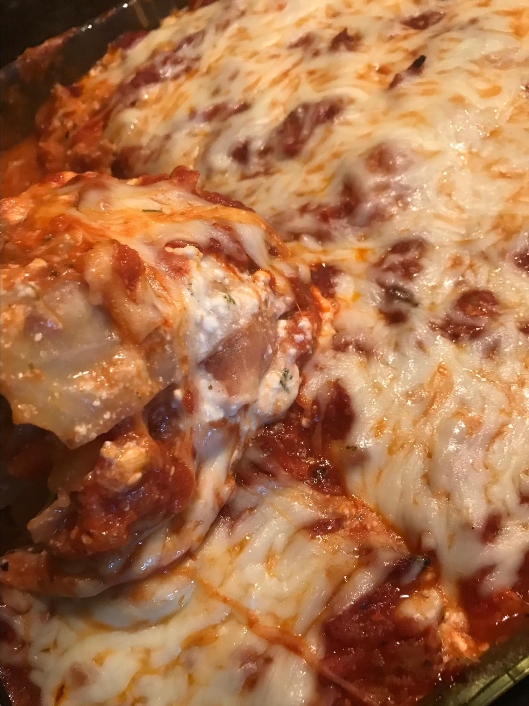

Cabbage Lasagna

Description:
A very filling, low-carb lasagna that uses cabbage leaves in place of lasagna noodles.
We find it every bit as good if not better than lasagna with pasta
Ingredients:
- 1 pound lean ground beef
- 1 medium onion, chopped
- 1 tablespoon minced garlic
- ½ cup grated carrots
- 4 ounces mushroom pieces
- 1 pound canned tomatoes
- 1 tablespoon dried basil
- 1 teaspoon white sugar
- 1 teaspoon salt
- ½ teaspoon thyme
- ¼ teaspoon nutmeg
- 1 head cabbage
- 24 ounces low-fat cottage cheese
- ½ cup grated Parmesan cheese
- 1 tablespoon parsley
- 1 ½ teaspoons salt
- 1 teaspoon oregano
- cooking spray
- 2 cups grated part-skim mozzarella cheese
- ½ cup grated Parmesan cheese
Steps:
- Heat a large skillet over medium-high heat. Cook and stir ground beef, onion, and garlic
in the hot skillet until meat is browned and crumbly, 5 to 7 minutes. Drain and discard grease.
Add carrots and mushrooms. Add tomatoes and break up using a fork. Add basil, sugar,
1 teaspoon salt, thyme, and nutmeg. Reduce heat and simmer meat sauce for 30 minutes.
- Meanwhile, bring a large pot of water to a boil. Immerse cabbage in the boiling water
- Combine cottage cheese, 1/2 cup Parmesan cheese, parsley, 1 1/2 teaspoons salt,
and oregano in a bowl and set aside.
- Preheat the oven to 350 degrees F (175 degrees C). Coat a 9x13-inch baking pan with cooking
spray and place a layer of cooked cabbage leaves flat in the bottom.
- Reserve 1/4 cup of meat sauce. Layer 1/2 the remaining sauce on top of the cabbage leaves in
the baking pan. Layer 1/2 the cottage cheese mixture followed by 1/2 the mozzarella cheese.
Add a second layer of cabbage leaves, followed by remaining 1/2 of meat sauce, remaining
cottage cheese mixture, and mozzarella cheese. Sprinkle reserved 1/4 cup meat sauce on top
and finish with 1/2 cup Parmesan cheese.
- Bake in the preheated oven for 45 minutes. Remove from the oven and let sit 15 minutes before slicing.
Cook's Note: This can be made ahead and refrigerated. Allow an additional
10 to 15 minutes baking time.